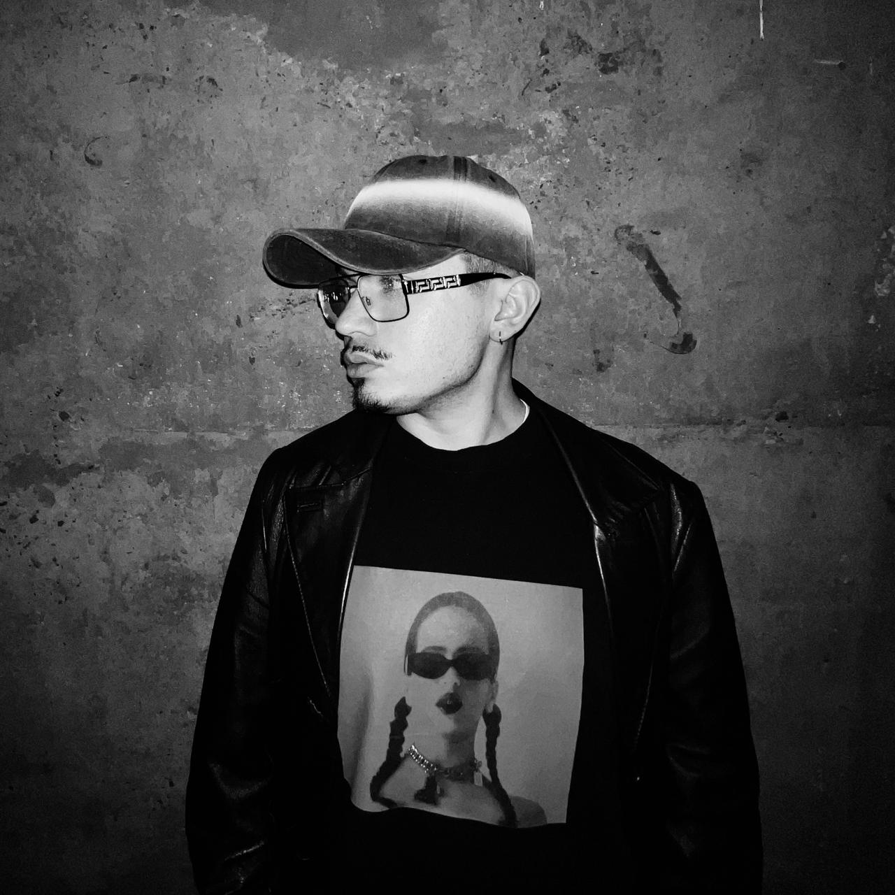

Computación Avanzada 2026
Matías Pezoa
Diseño Industrial + Magíster en Ciencias del Diseño.

Perfil
- Qué hago hoy
- Trabajo como diseñador y docente universitario, especializado en la intersección entre moda, tecnología y fabricación digital. Desarrollo proyectos que integran diseño, procesos de fabricación y herramientas computacionales aplicadas al cuerpo y al vestuario.
- Qué me gustaría aprender en este curso
- Cómo utilizar sistemas digitales y computacionales para expandir los procesos de diseño de moda, conectando cuerpo, geometría, materialidad, fabricación e interacción.
Intereses
Una pregunta que me interesa explorar
¿Cómo puede el diseño computacional transformar la relación entre cuerpo, material y fabricación para generar nuevas formas de diseñar y producir indumentaria?
Algo que me inspira
Los proyectos donde la tecnología no funciona únicamente como una herramienta para fabricar una forma previamente diseñada, sino como parte activa del proceso de diseño, permitiendo que el cuerpo, los materiales, los datos y los sistemas de fabricación participen en la generación del resultado.
Modelo 3D
Arrastra para orbitar · GAGA.glb